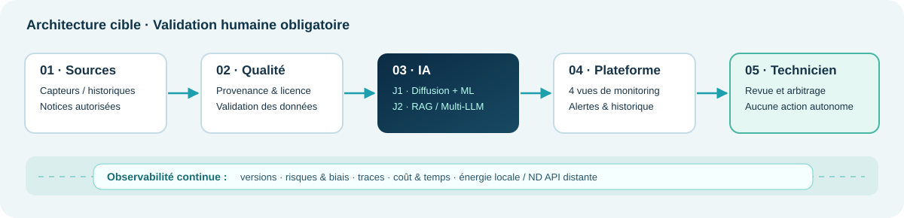

Equipment fleet
Inventaire, statut, historique et traçabilité des équipements pilotes, après validation du périmètre et des sources.
Parc & équipementsECE PARIS · MSC2 ARTIFICIAL INTELLIGENCE
Une plateforme de recherche pour explorer comment l'IA générative, les modèles de diffusion et les systèmes Multi-LLM peuvent assister la maintenance d'équipements médicaux.
⚠️ Prototype universitaire, non clinique : aucun diagnostic patient ni commande d'appareil réel. L'utilisateur humain conserve la décision finale.

01 / WHY WE BUILD
La recherche doit aboutir à une véritable application, avec des limites explicites et une validation humaine à chaque étape sensible.
Inventaire, statut, historique et traçabilité des équipements pilotes, après validation du périmètre et des sources.
Parc & équipementsContrôle qualité, signaux, anomalies candidates, analyse des faux positifs et limites de transfert entre domaines.
Détection & qualitéAlerte, revue technique, intervention simulée et journal d'approbation : aucune action autonome sur machine.
Décisions humainesVersions, qualité, coût complet, temps humain, latence, risques, biais et frontières environnementales.
MLOps · FinOps · Green AIQuatre vues fonctionnelles sur données entièrement fictives · PR n° 8 · Validation métier en attente.
02 / SYSTEM DESIGN

Versioned by designDatasets, modèles, prompts, sources et versions de code liées aux traces.
Safety by designRéponses sourcées, refus justifiés, revue humaine, risques et biais documentés.
Cost-aware by designÉnergie locale, budget et effort humain suivis dès le cadrage — sans inventer de mesures.
03 / SCIENTIFIC TRACKS
TP05 enrichit le deuxième jalon Multi-LLM. Aucun résultat scientifique ou clinique n'est présenté comme validé avant son exécution.
Comparer un véritable modèle génératif (diffusion / reconstruction) à une baseline sur des cas gelés, documenter la reproductibilité et un échec.
04 / THE PEOPLE
Les compétences complémentaires — IA, data, logiciel, fonctionnel et coordination — sont reliées par des binômes et une revue des contributions.